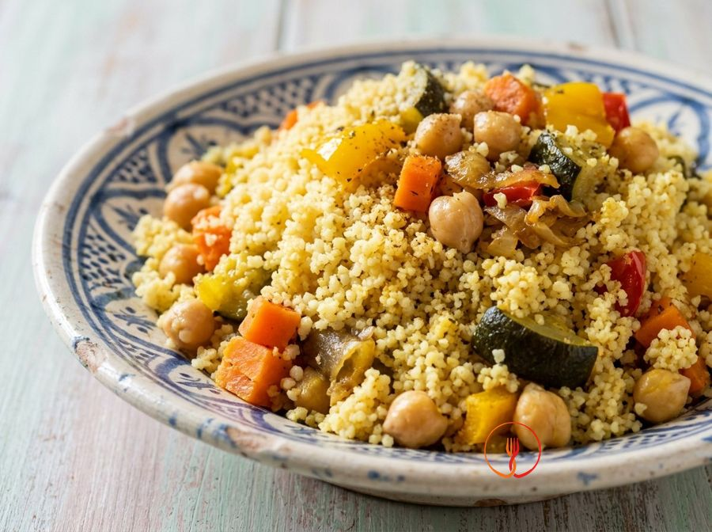

Couscous marocchino con verdure
Couscous profumato con verdure, ceci e spezie del Marocco.
Ingredienti
- Couscous di semola di grano duro300 gr
- Ceci precotti (peso sgocciolato)240 gr
- Zucchine medie2 pezzi
- Carote medie2 pezzi
- Peperone giallo o rosso1 pezzo
- Cipolla dorata1 pezzo
- Olio extravergine d'oliva40 ml
- Cumino in polvere5 gr
- Cannella in polvere2.5 gr
- Uvetta sultanina40 gr
- Brodo vegetale (filtrato)
Fallo in casa: Brodo vegetale ›400 ml - Sale fino8 gr
Allergeni
Glutine, Solfiti
Può contenere tracce di: Sedano.
Procedimento
- Reidratare l'uvetta in acqua tiepida per circa 15 minuti, poi strizzarla.
- Lavare e mondare le verdure: tagliare le carote a rondelle, le zucchine a cubetti di 2 cm e il peperone a falde sottili. Tritare finemente la cipolla.
- In una casseruola capiente, scaldare l'olio extravergine e soffriggere la cipolla per 4 minuti a fuoco dolce fino a farla appassire.
- Aggiungere le carote e il peperone, saltare a fuoco vivace per 5 minuti mescolando spesso.
- Unire le zucchine, i ceci, il cumino, la cannella e metà del sale. Versare 100 ml di brodo e cuocere con coperchio per 15 minuti.
- Portare il brodo rimanente a ebollizione. In una ciotola ampia, versare il couscous con un filo d'olio e il sale rimasto, sgranandolo con una forchetta.
- Versare il brodo bollente sul couscous, coprire sigillando bene e lasciare riposare per 5-7 minuti lontano dal fuoco.
- Aggiungere l'uvetta alle verdure negli ultimi 2 minuti di cottura del condimento.
- Sgranare definitivamente il couscous con una forchetta per separare i chicchi.
- Impiattare il couscous a base larga e disporre le verdure speziate con il loro fondo di cottura al centro.
Valori nutrizionali (stima)
| Per porzione (415 g) | Per 100 g | |
|---|---|---|
| Energia | 2057 kJ / 489 kcal | 496 kJ / 118 kcal |
| Proteine | 14 g | 3.5 g |
| Carboidrati | 72 g | 17 g |
| di cui zuccheri | 11 g | 2.7 g |
| Grassi | 14 g | 3.3 g |
| di cui saturi | 2.0 g | 0.5 g |
| Fibre | 9.5 g | 2.3 g |
| Sale | 2.2 g | 0.53 g |
Valori stimati con l'AI su dati medi CREA / USDA: sono indicativi e non sostituiscono il parere di un medico o di un nutrizionista.
Apri la ricetta nell'app per la lista della spesa, le schede ingredienti e i negozi vicini.